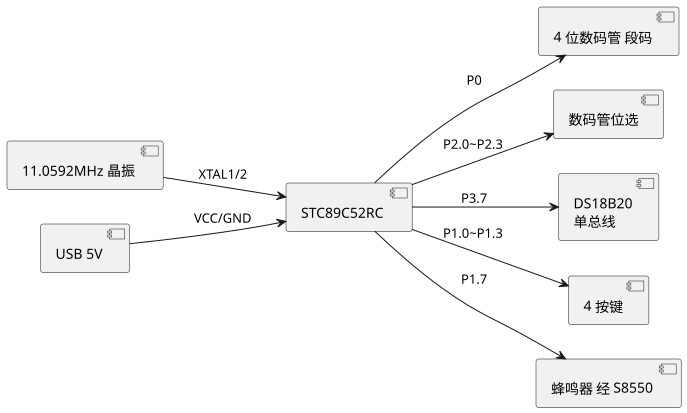
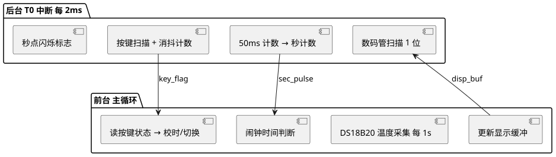

第 12 章 STC89C52RC 综合实验
学习目标
- 掌握 STC89C52RC 综合应用系统的硬件设计与软件架构方法
- 能够将定时器中断、数码管动态显示、温度采集、按键扫描等模块协同工作
- 理解"主循环 + 定时器中断"前后台架构在裸机系统中的组织方式
- 掌握借助 AI 工具（如 TRAE）辅助代码编写与 Bug 排查的工作流程
- 培养独立完成中小型单片机项目的工程实践能力
12.1 实验目标：多功能数字钟
本章综合运用前 8 章所学知识，设计并实现一个多功能数字钟。系统基于 STC89C52RC，融合定时器中断、数码管动态显示、独立按键、蜂鸣器、DS18B20 单总线温度传感器等模块，最终功能包括：
- 时间显示：时:分:秒 8 位数码管显示，秒点每秒闪烁
- 按键校时：3 个按键分别调整时、分、秒（按住加 1，长按连续加）
- 闹钟功能：到达设定时间蜂鸣器鸣响 30 秒，按键可提前关闭
- 温度显示：长按温度键切换到温度显示界面，实时显示环境温度（℃）
本实验旨在让学生把零散的外设知识串接成一个完整系统，体会"分模块开发 + 主程序集成 + 系统联调"的工程方法。
12.2 硬件设计
12.2.1 元件清单
| 元件 | 型号/规格 | 数量 | 用途 |
|---|---|---|---|
| 单片机 | STC89C52RC | 1 | 主控 |
| 晶振 | 11.0592 MHz + 30pF 电容 | 1 | 时钟源（兼顾波特率） |
| 数码管 | 共阴 4 位 0.36 寸 | 2 | 显示时分秒/温度 |
| 温度传感器 | DS18B20 | 1 | 数字温度采集 |
| 按键 | 6×6 轻触按键 | 4 | 时/分/秒校时 + 模式切换 |
| 蜂鸣器 | 有源 5V | 1 | 闹钟提示 |
| 三极管 | S8550 PNP | 1 | 蜂鸣器驱动 |
| 电阻 | 4.7kΩ 上拉 | 1 | DS18B20 数据上拉 |
| 电源 | USB 5V | 1 | 系统供电 |
12.2.2 电路连接框图

查看 PlantUML 源码
@startuml
skinparam defaultFontName "Microsoft YaHei"
left to right direction
component "STC89C52RC" as MCU
component "4 位数码管 段码" as SEG
component "数码管位选" as DIG
component "DS18B20\n单总线" as DS
component "4 按键" as KEY
component "蜂鸣器 经 S8550" as BUZ
component "11.0592MHz 晶振" as XTAL
component "USB 5V" as USB
MCU --> SEG : P0
MCU --> DIG : P2.0~P2.3
MCU --> DS : P3.7
MCU --> KEY : P1.0~P1.3
MCU --> BUZ : P1.7
XTAL --> MCU : XTAL1/2
USB --> MCU : VCC/GND
@enduml图 12-1 多功能数字钟硬件框图
12.2.3 关键接线表
| 单片机引脚 | 外设 | 说明 |
|---|---|---|
| P0.0~P0.7 | 数码管 a~dp | 8 位段码输出，需 220Ω 限流 |
| P2.0~P2.3 | 4 位数码管公共端 | 位选，低电平有效（经三极管驱动） |
| P3.7 | DS18B20 DQ | 单总线数据，4.7kΩ 上拉到 VCC |
| P1.0 | KEY1 | 小时 + |
| P1.1 | KEY2 | 分钟 + |
| P1.2 | KEY3 | 秒清零 |
| P1.3 | KEY4 | 模式：时钟/温度切换 |
| P1.7 | S8550 基极 | 蜂鸣器控制，1=响 |
12.3 软件架构与任务分解
采用"前后台架构"：定时器 T0 中断作为后台（每 2 ms 触发一次），负责数码管动态扫描、按键消抖计数、秒计数；主循环作为前台，负责温度采集、闹钟判断、显示缓冲更新等较慢任务。

查看 PlantUML 源码
@startuml
skinparam defaultFontName "Microsoft YaHei"
top to bottom direction
package "后台 T0 中断 每 2ms" as 后台 {
component "数码管扫描 1 位" as A1
component "按键扫描 + 消抖计数" as A2
component "50ms 计数 → 秒计数" as A3
component "秒点闪烁标志" as A4
}
package "前台 主循环" as 前台 {
component "读按键状态 → 校时/切换" as B1
component "DS18B20 温度采集 每 1s" as B2
component "闹钟时间判断" as B3
component "更新显示缓冲" as B4
}
A2 --> B1 : key_flag
A3 --> B3 : sec_pulse
B4 --> A1 : disp_buf
@enduml图 12-2 主循环 + 定时器中断前后台架构
12.3.1 任务分解
| 任务 | 执行位置 | 周期 | 说明 |
|---|---|---|---|
| 数码管扫描 | T0 中断 | 2 ms | 4 位轮询，每位显示 2 ms，刷新率 125 Hz |
| 按键消抖 | T0 中断 | 10 ms | 每 5 次中断（10 ms）采样一次按键 |
| 秒计数 | T0 中断 | 1 s | 500 次中断累加为 1 秒 |
| 校时处理 | 主循环 | 事件触发 | 按键按下后调整时/分/秒 |
| 温度采集 | 主循环 | 1 s | DS18B20 复位 → 命令 → 读 2 字节 |
| 闹钟判断 | 主循环 | 1 s | 当前时间与闹钟时间比较 |
| 显示更新 | 主循环 | 事件触发 | 根据模式更新 disp_buf[] |
12.4 关键代码与 AI 辅助调试示例
12.4.1 显示模块
#include <reg52.h>
const unsigned char code SEG[] = {
0x3F, 0x06, 0x5B, 0x4F, 0x66,
0x6D, 0x7D, 0x07, 0x7F, 0x6F
};
const unsigned char code SEG_DOT = 0x80; // 小数点
unsigned char disp_buf[8] = {1,2,3,4,5,6,7,8};
unsigned char code DIG_SEL[8] = {0xFE,0xFD,0xFB,0xF7,0xEF,0xDF,0xBF,0x7F};
unsigned char dig_idx = 0;
// 在 T0 中断中调用
void Display_Scan(void)
{
P0 = 0x00; // 消影
P2 = DIG_SEL[dig_idx]; // 位选
P0 = SEG[disp_buf[dig_idx]]; // 段码
if (++dig_idx >= 8) dig_idx = 0;
}
void Display_ShowTime(unsigned char h, unsigned char m, unsigned char s)
{
disp_buf[0] = h / 10;
disp_buf[1] = h % 10;
disp_buf[2] = m / 10;
disp_buf[3] = m % 10;
disp_buf[4] = s / 10;
disp_buf[5] = s % 10;
disp_buf[6] = 16; // 空
disp_buf[7] = 16; // 空
}
12.4.2 DS18B20 温度采集
#include <intrins.h>
sbit DQ = P3^7;
void DS_Delay(unsigned int us)
{
while (us--) { _nop_(); _nop_(); _nop_(); _nop_(); }
}
bit DS_Reset(void)
{
bit ack;
DQ = 0; DS_Delay(480); // 拉低 480us
DQ = 1; DS_Delay(60); // 释放等 60us
ack = DQ; // 0=存在
DS_Delay(420); // 等待结束
return ack;
}
void DS_WriteByte(unsigned char dat)
{
unsigned char i;
for (i = 0; i < 8; i++) {
DQ = 0; _nop_(); _nop_();
DQ = dat & 0x01; DS_Delay(60); // 写 1 位
DQ = 1; dat >>= 1;
}
}
unsigned char DS_ReadByte(void)
{
unsigned char i, dat = 0;
for (i = 0; i < 8; i++) {
DQ = 0; _nop_(); _nop_();
DQ = 1; _nop_(); _nop_();
dat >>= 1;
if (DQ) dat |= 0x80;
DS_Delay(60);
}
return dat;
}
int DS_ReadTemp(void) // 返回 10 倍温度
{
unsigned char l, h;
int t;
DS_Reset();
DS_WriteByte(0xCC); // 跳过 ROM
DS_WriteByte(0x44); // 启动转换
DS_Delay(75000); // 等待 750ms
DS_Reset();
DS_WriteByte(0xCC);
DS_WriteByte(0xBE); // 读暂存器
l = DS_ReadByte();
h = DS_ReadByte();
t = (h << 8) | l; // 16 位补码
if (t < 0) t = ~t + 1; // 取绝对值
return t * 10 / 16; // 0.0625°C/LSB → 10倍℃
}
12.4.3 闹钟逻辑
unsigned char alarm_h = 7, alarm_m = 30; // 闹钟 07:30
unsigned char alarm_on = 1; // 闹钟启用
unsigned char alarm_ring = 0; // 当前是否鸣响
unsigned char ring_cnt = 0; // 鸣响秒数计数
sbit BUZZER = P1^7;
void Alarm_Check(unsigned char h, unsigned char m, unsigned char s)
{
if (alarm_on && !alarm_ring &&
h == alarm_h && m == alarm_m && s == 0) {
alarm_ring = 1;
ring_cnt = 0;
}
if (alarm_ring) {
BUZZER = (ring_cnt & 1); // 1Hz 间歇鸣响
if (++ring_cnt >= 30) { // 30 秒后自动停
alarm_ring = 0;
BUZZER = 0;
}
}
}
12.4.4 主程序与定时器中断
unsigned char hour = 12, min = 0, sec = 0;
unsigned char cnt_2ms = 0, sec_pulse = 0;
unsigned char mode = 0; // 0=时钟 1=温度
int temperature = 250; // 默认 25.0℃
void Timer0_Init(void)
{
TMOD &= 0xF0;
TMOD |= 0x01; // T0 模式 1
TH0 = 0xF8; TL0 =0xCD; // 2ms @11.0592MHz
ET0 = 1; EA = 1; TR0 = 1;
}
void main(void)
{
Timer0_Init();
while (1) {
if (sec_pulse) { // 每秒任务
sec_pulse = 0;
if (++sec >= 60) {
sec = 0;
if (++min >= 60) {
min = 0;
if (++hour >= 24) hour = 0;
}
}
Alarm_Check(hour, min, sec);
temperature = DS_ReadTemp(); // 每秒采温
}
Key_Process(); // 按键处理
if (mode == 0)
Display_ShowTime(hour, min, sec);
else
Display_ShowTemp(temperature);
}
}
void Timer0_ISR(void) interrupt 1
{
TH0 = 0xF8; TL0 = 0xCD; // 重装 2ms
Display_Scan(); // 数码管扫描
if (++cnt_2ms >= 500) { // 500*2ms=1s
cnt_2ms = 0;
sec_pulse = 1;
}
}
12.4.5 AI 辅助调试示例
在开发过程中，学生可借助 TRAE、GitHub Copilot 等 AI 工具加速问题定位。例如：当数码管显示乱码时，向 AI 描述现象：
"STC89C52RC + 共阴 4 位数码管动态扫描，第 3 位始终不亮其他位正常，代码使用 P2 = DIG_SEL[dig_idx] 选位，DIG_SEL = {0xFE,0xFD,0xFB,0xF7}。帮我排查可能原因。"
AI 可能给出排查清单：① P2.2 引脚接触不良或焊点虚焊；② 数码管第 3 位公共端接线断开；③ DIG_SEL 数组索引越界；④ P2 口其他位被其他模块复用导致冲突。学生据此逐步排查硬件，最终定位为 P2.2 焊点虚焊。
AI 辅助开发原则：① 描述现象要精确（芯片型号、引脚、代码、现象）；② AI 给出的方案要逐条验证，不能盲信；③ 复杂 Bug 仍需借助逻辑分析仪、示波器等硬件手段；④ 把 AI 输出当作"加速器"而非"替代品"，培养独立判断能力。
12.5 调试问题排查与扩展方向
12.5.1 常见 Bug 与解决
| 现象 | 可能原因 | 解决方法 |
|---|---|---|
| 数码管亮度不均/重影 | 消影未做或刷新率低 | 切换位选前 P0=0x00；保证每位 ≥1 ms |
| 时间走时偏快/偏慢 | T0 重装值计算错误 | 11.0592 MHz 2 ms 重装 0xF8CD；用秒表校准 |
| DS18B20 读温度 85℃ | 未启动转换或读取过早 | 先 0x44 启动转换，等待 750 ms 再读 |
| DS18B20 读温度 -1 或 0 | 1-Wire 时序不对或上拉缺失 | 检查 4.7kΩ 上拉；时序用逻辑分析仪核对 |
| 按键连按/不响应 | 消抖计数过短或过长 | 10 ms 采样周期，连续 2~3 次相同状态确认 |
| 蜂鸣器声音小 | 驱动电流不足 | S8550 基极加 1kΩ 限流，集电极直接驱动蜂鸣器 |
12.5.2 扩展方向
- 日历扩展：增加 DS1302 实时时钟芯片，实现年月日星期显示，掉电不失时间。
- 多组闹钟：使用 AT24C02 EEPROM 存储多组闹钟时间，支持工作日/周末模式。
- 远程校时：增加 ESP8266 Wi-Fi 模块，通过 NTP 协议网络校时，或通过 MQTT 远程下发闹钟时间。
- 温控输出：温度超阈值时通过继电器控制风扇/加湿器，演化为简易恒温系统。
- 语音播报：增加 SYN6288 等语音合成模块，整点报时或按键操作语音反馈。
- OLED 显示：替换数码管为 0.96" OLED（SSD1306，I2C 接口），支持中文与图标显示。
本章小结
- 本章以多功能数字钟为综合项目，串联定时器中断、数码管、按键、DS18B20、蜂鸣器等模块，体现 STC89C52RC 典型应用系统设计。
- 硬件设计先列元件清单再画框图与接线表，确保接线清晰可追溯。
- 软件采用"前后台架构"：T0 中断做高频任务（扫描、消抖、计时），主循环做低频任务（采温、闹钟、显示更新）。
- 关键模块包括显示扫描、DS18B20 单总线时序、闹钟判断逻辑，代码遵循模块化、可读性优先原则。
- AI 辅助工具（TRAE、Copilot）可加速代码编写与 Bug 排查，但需结合硬件仪器独立验证。
- 扩展方向涵盖日历、EEPROM 存储、Wi-Fi 联网、温控输出、语音播报等，可作为课程设计或毕业设计选题。
思考题与习题
- 简述"前后台架构"的分工原则，哪些任务适合放在中断？哪些适合放在主循环？
- 数码管动态扫描的刷新率如何计算？刷新率过低或过高各有什么现象？
- DS18B20 读温度出现 85℃，请分析可能原因并给出排查步骤。
- 在本章综合实验基础上，若要增加年月日显示，硬件和软件应做哪些改动？
- 讨论：在 STC89C52RC 裸机开发中，如何合理使用 AI 辅助工具提升开发效率而不丧失独立工程能力？
参考文献
- 张毅刚. 单片机原理及应用——C51 编程 + Proteus 仿真（第 4 版）[M]. 北京：高等教育出版社, 2021.
- STC 官方. STC89C52RC 数据手册 [Z]. 2024. https://www.stcmcudata.com/
- Maxim Integrated. DS18B20 Programmable Resolution 1-Wire Digital Thermometer Datasheet [Z]. 2019.
- 郭天祥. 新概念 51 单片机 C 语言教程 [M]. 北京：电子工业出版社, 2018.
- 何立民. 单片机高级教程——应用与设计（第 3 版）[M]. 北京：北京航空航天大学出版社, 2018.